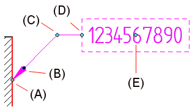
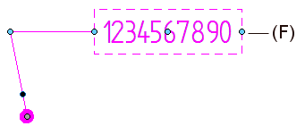
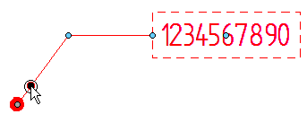
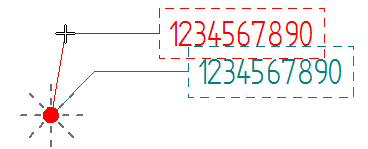
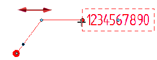
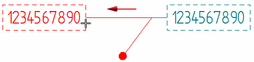

Manipulating callouts
After you place a callout, you can use its annotation handles to adjust the position, orientation, and size of the callout. The callout handles are not visible until you select the callout.
For a variable-width callout, which changes size with its contents, the following handles are displayed:

For a fixed-width callout, one additional handle is displayed:

|
Handle location |
Purpose |
|
(A) Connection handle |
Moves the start point of the leader along the annotated element. Pressing <Alt> disconnects the leader and removes associativity. Pressing <Alt+Ctrl> disconnects the leader, yet preserves associativity. Use this option to preserve the model-derived information in hole callouts and other feature callouts. |
|
(B) Terminator handle |
 |
|
(C) Leader edit handle |
Moves the callout text freely by moving the break line. Changes the leader line length and orientation. Dashed lines indicate snap-to orientations.  Inserting vertices into the leader line adds edit points. |
|
(D) Break line edit handle |
Lengthens or shortens the break line.  Flips the callout and break line to the opposite side of the leader.  To flip a callout without a leader, you can turn the leader and break line on, drag the callout, and then turn the lead and break line off again. |
|
(E) Move handle |
Moves the callout freely even when there is no leader or break line.
|
|
(F) Callout resize handle |
Changes the callout width. Available only when using a fixed-width callout.
|
 Displays a list of terminators for you to change the terminator type.
Displays a list of terminators for you to change the terminator type.

How do I
Place a calloutPlace a hole callout
Place a feature callout
Customize a feature callout
Define smart feature properties in the Dimension style
Learn more
Formatting callout text and borderLook up more details
Callout commandCallout command bar
Callout Properties dialog box
General tab (Callout Properties dialog box)
Text and Leader tab
Feature Callout tab
Border tab (Callout Properties dialog box)
Quick links
Place a feature callout dimensionBasic reference and property text rules
Format codes to modify reference and property text output